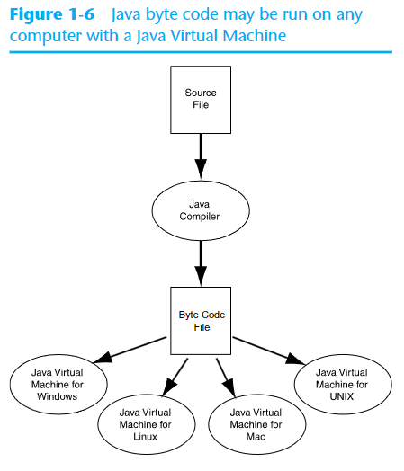

Introduction to Computers and Java
The versatality of the computer allows it do such a wide variety of task that it makes it one of the greatest tools known in existence. It can accomplish this by being programmed to follow specifically designed instructions.
Programming is considered both a science and an art. Here are a few things that must be designed for any real-world computer program:
- the logical flow of the instructions
- the mathematical procedures
- the layout of the programming statements
- the appearance of the screen
- the way the information is presented to the user
- the program's, 'user friendliness'
- manuals, help systems, and/or other forms of written documentation
Hardware and Software
Hardware refers to the physical components that make up a computer. A typical computer consists of:
- central processing unit (CPU)
- main memory
- secondary storage devices
- input devices
- output devices

The CPU
The Central Processing Unit's job is to fetch instructions, follow instructions, and then produce some resulting data. The CPU consists of two parts: the control unit and the arithmetic and logic unit (ALC). The control unit coordinates all of the computer's operations (where to get the next instruction and regulating the other major components of the computer with control signlas), while the arithmetic and logic unit performs all of the mathematical operations.

A program is a sequence of instructions stored in the computer's memory. When a computer is running a program, the CPU is engaged in a process known as the fetch/decode/execute cycle. These steps are repeated as long as there are instructions to perform.
- Fetch: The CPU control unit fetches (from main memory) the next instructions in the sequenece of programming instructions.
- Decode: The instructions are encoded as a series of numbers. The control unit decodes the instructions and generates an electronic signal.
- Execute: The signal is routed to the appropiate component of the computer. This signal causes the component to perform an operation.
Main Memory
Random access memory, or RAM, is the computer's main memory and is a device that holds the sequeneces of instructions of programs that are running and the data those programs are using. RAM is known as a volatile type of memory, used only for temporary storage. When the computer is turned off, the contents of RAM are erased.
- Memory is divided into sections that hold an equal amount of data.
- Each section is made up of eight switches that may be either on or off. 1 if it is on, 0 if it is off.
- The computer stores data by setting the switches in the memory location to a pattern that represents a number or a character. Each of these switches is known as a bit, which stands for binary digit.
- Each section of memory, which is a collection of eight bits, is known as a byte.
- Each byte is assigned an unique number known as an address. Addresses are ordered from lowest to highest.

Secondary Storage
A type of memory that can hold data for long periods of time, even when there is no power to the computer.
- The most common type of secondary storage is the disk drive. The best type of disk drive is the solid-state drive. A solid-state drive has no moving parts, and works much faster than a traditional disk drive. These types of storage are usually mounted within the computer.
- External secondary storage is used for creating backups of data, or moving said data to another computer. One popular type is a universal serial bus drive (usb). USBs do not contain a disk, but instead store data in a special type of memory known as flash memory.
Input Devices
Input is any data that a computer collects from the outside world: keyboard, mouse, scanner, camera, etc.
Output Devices
Output is any data that the computer sends to the outside world: Monitors, printers, etc.
Software
Refers to the programs that run a computer. There are two types of software: operating systems and application software.
- Operating Systems: A set of programs that manages the computer's hardware devices and controls their processes. Most modern operating systems are multitasking, which means they are compatible with running multiple programs at once. Through a technique called time-sharing, a multitasking system divides the allocation of hardware resources and the attention of the CPU among all the executing programs. Linux, Mac OS, Windows.
- Application software: What the user uses. These programs solve specific problems or perform general operations that satisfy the user's needs. Word processing, spreadsheets.
Programming Languages
A programming language is a special language used to write programming programs. A computer's CPU can only process instructions that are written in machine language, which is made up of binary (1s and 0s). Here is some binary:
$ 1011010000000101 $
Kind of hard to read, huh? The binary numbers form machine language instructions, which the CPU interprets as commands. Each type of CPU has its own machine language and writing in it is very tedious and difficut. A program is written in a programming language that humans can read much easier than binary. It is then translated into machine language.

Algorithm
A set of well-defined steps for performing a task or solving a problem.
What is a program made of?
There are some universal elements that take place in almost every programming languages:
- Keywords: Words that have special meaning in the programming language. Also known as reserved words.
- Operators: Symbols or words that perform operations on one or more operands. An operand is usually an item of data, such as a number.
- Punctuation: Most languages require the use of punctuation characters. These characters serve specific purposes, such as making the beginning or ending of a statement, or separating items in a list.
- Programmer Defined Names: Unlike keywords, these are words or names that are defined by the programmer. They are used to identify storage locations in memory and parts of the program that are created by the programmer. Programmer-defined names are often called identifiers. They can be variable, function, method, class, object, constant, array, package, or enumeration names.
- Syntax: These are the rules that must be followed when writing a program. Syntax dictates how keywords and operators may be used, and where punctuation symbols must appear.
Java Keywords
Part of learning a programming language is learning the commonly used keywords, what they mean, and how to use them. An important note about keywords is that they are reserved and cannot be used for anything other than their designated purpose. Do not worry about memorizing these or even fully understanding them just yet. With time, you will learn what they mean and how to use them.
| abstract | const | final | int | public | throw |
| assert | continue | finally | interface | return | throws |
| boolean | default | float | long | short | transient |
| break | do | for | native | static | true |
| byte | double | goto | new | sticitfp | try |
| case | else | if | null | super | void |
| catch | enum | implements | package | switch | volatile |
| class | false | instanceof | protected | this | ![smiley]()
|
Java Program example
public class PayDay {
public static void main(String[] args) {
int totalHours = 37;
double grossPay, payRate = 69.0;
grossPay = totalHours * payRate;
System.out.println("You made $" + grossPay + " bucks this week!");
}
}
Example of some keywords:
public, class, public, static, void,
int, and double. Always written in lowercase, each keyword has a special meaning
in
Java. Part of learning a programming language is learning the commonly used keywords, and you will be using
these ones a lot!
Programmer-defined names:
totalHours, payRate, and grossPay are programmer-defined names and in
this
case, are all variables (we'll talk about that is a second). They are not part of the Java
language but are names that are made up by the programmer.
operators
= and *. They perform operations on items of data (aka operands).
* will multiply two operands together, in this case, totalHours and
payRate. The = symbol is called an assignment operator. It takes
the
value of the expression that appears at its right and stores in the variable whose name appears on the left.
Try
some mental math, any guess to what grossPay's value is?
punctuation
;. Notice at the end of certain lines we have a semi-colon. This will mark the end of a
statement (a
certain line of code). There are rules that govern where semicolons are required and where they are not.
Lines and statements
A line is what you expect...a single line within a body of a program. When a line ends with ; it
contains somehting meaningful. When a line is blank it is only to make a program more readable for the
programmer. Here is an example of a statement from our program:
System.out.println("You made $" + grossPay + " bucks this week!");
This specific statement causes the computer to display a message on the screen. Statements can be a combination of key words, operators, and programmer-defined names. They can be one, or spread out over several lines.
Variables
The most fundamental way Java can store an item of data in memory. A variable is a named storage location in
the
computer's memory. Variables are symbolic names made up by the programmer that represent locations in the
computer's RAM. So when data is stored in a variable, it is actually stored in RAM. Let's assume that a
program
has a variable named age. Here is an example of how the variable name represents a memory
location.
image of memory with length value
Here we have the variable age is holding the value of 21. The number 21 is actually stored in
RAM at
address 7, but the name age symbolically represents this storage location. Think of a variable
as a
box that holds data. The number 21 is stored in the box named age. Only one item may be stored
in
the box at any given time. If the program stores another value in the box, it will take the place of the
number
21.
The Compiler and the Java Virtual Machine
Quick definitions:
- Text editor: used to write Java programs and save it to a file.
- Source code: the Java programming statements that were written.
- Source file: the file your Java source code is saved to. Ends in the extension .java
- Compiler: What allows your file to run. It translates source code into an executable
form.
The java compiler translates a Java source file (
.java) into a file that contains byte code (.class) instructions. The byte code instructions are considered intermediate code but are not machine language and cannot be executed by the CPU, so instead they are executed by the Java Virtual Machine. The JVM is a program that reads Java Byte code instructions and executed them as they are read. For this reason, the JVM is often called an interpreter, and Java is often referred to as an interpreted language. Although Java byte code is not machine language for a CPU, it can be considered as machine language for the JVM.

- Portability: The term portable means that a program may be written on one type of computer and then run on a wide variety of computers, with little or no modification necessary. Because Java byte code is the same on all computers, complied Java programs are highly portable, meaning that a compiled Java program is able to run on any computer that has a JVM. Most other programming languages need to use a compiler for each type of computer that the language is going to run on. Example, a separate C++ compiler must be created for windows, linux, and mac to run on each of those environments.

-
Compiling and Running a Java Program: You must compile your Java program to run. Just go to your operating system's command prompt and make sure you are in the same directory or folder where the Java program that you want to compile is located
javac Filename // place the name of file with the .java extension at Filename placeholderUsing our example above,
Filenamewould be replaced byPayDay.java.After the compiler translates to byte code, the byte code is stored in a file with the
.classextention, contained within the same directory. However, you do not use the.classextension when opening the file.// This command runs the Java interpreter (the JVM) and executes the program Java ClassFilenameContinuing with the example,
ClassFilenamewould be replaced byPayDay.
The Programming Process
The general process for creating a program starts with planning. Start here if you are not sure on how to tackle a problem:
- Clearly define what the program is going to do
- Visualize the program running on the computer
- Use design tools to create a model of the program (pseudocode)
- Check the model for logical errors
- Enter the code and compile it
- Correct any errors found during compilation.
- Repeat steps 5-6 as many times as needed.
- Run the program with test data for input
- Correct any runtime errors found while running the program.
- Repeat steps 5-9 as many times as necessary
- Validate the results of the program
Object-Oriented Programming
Java is an example of an OOP language. OOP is a method of software development that has its own practices, concepts, and vocabulary.
There are two methods of programming: procedural and object-oriented. Procedual is a set or programming statements that perform a specific task. The typically operate on data items that are separate form the procedures. This separation of data and the code that operates on the data often leads to problems.

The issues from procdural programs gave way to OOP. OOP became centered on creating objects. Objects are a self-contained unit consisting of data (attributes) and procedures (methods). Only the object's methods may directly access and make changes to the object's data. An object typically hides its data, but allows outside code to access the methods that operate on the data.
OOP addresses the problem of code/data separation throught data hiding, called encapsulation. Encapsulation refers to the combining of data and code into a single object. Data hiding refers to an object's ability to hide its data from code that is outside the object.
When the object's internal data is hidden from outside code and access to that data is restricted to the object's methods, the data is protected from accidental corruption. In addition, the programming code outside the object does not need to know about the format or internal structure of the object's data. The code only needs to interact with the object's methods.
When a programmer changes the structure of an object's internal data, he/she also modifies the object's methods so they may properly operate on the data. The way in which outside code interacts with the methods, however, does not change.
- Object: a software entity that contains data and procedures
- Attributes: the data contained in an object is known as the object's attributes
- Methods: the procedures or behaviors that an object performs are known as the object's methods
- Encapsulation: the combining of data and code into a single object
- Data Hiding: an object's ability to hide its data from code that is outside the object.
Knowledge Check
Arithmetic Logic Unit (ALU): Performs mathematical calculations (arithmetic) and logical operations (comparisons) required for processing.
Secondary Storage: Offers larger, non-volatile storage capacity for data and programs that need to be retained even when the computer is powered off. It is used for long-term storage and data persistence.
- CPU
- main memory
- hard drive (storage device)
- input devices
- output devices
- The combining of data and code into a single object.
- An object's ability to hide its data from code that is outside the object.